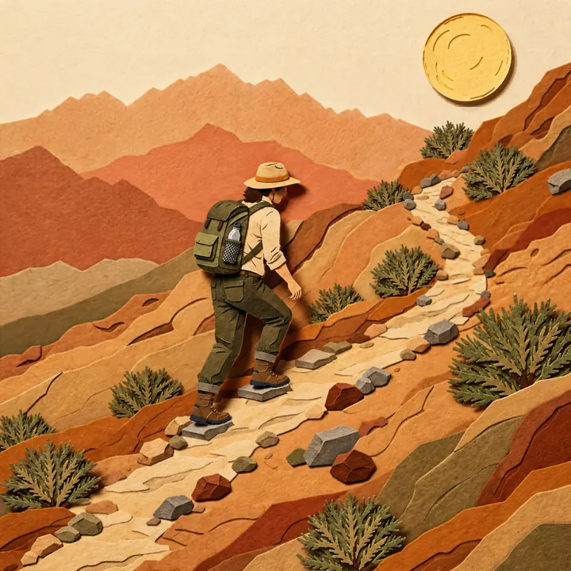

- From Tbilisi
- 60–70 km southeast
- Founded
- 6th century
- Vipers
- a risk especially in early summer (GOV.UK)
- Anti-venom
- rare outside major towns (GOV.UK)
- Emergency
- 112
This page is about Georgia the country, not the US state, and is part of our travel guide. Checked on 19 November 2026.
David Gareja monastery: the desert lavra
It is a working monastery carved into a remote, dry hillside. Wikipedia describes "a rock-hewn Georgian Orthodox monastery complex located in the Kakheti region of Eastern Georgia, on the half-desert slopes of Mount Gareja on the edge of the Iori Plateau, some 60–70 km southeast of Georgia's capital Tbilisi".
Cut from the rock. It includes "hundreds of cells, churches, chapels, refectories and living quarters hollowed out of the rock face," Wikipedia says.
The founder. It was founded in the 6th century by David of Gareji, "one of the thirteen Assyrian monks who arrived in the country at the same time". His disciples Dodo and Luciane "expanded the original lavra"; in the 9th century it grew further under Hilarion the Iberian.
The golden age. From the late 11th to the early 13th centuries, Wikipedia says, it reached "its highest phase", and new monasteries were built: Udabno, Bertubani and Chichkhituri.
Raids and revival. The monks lived through "devastation by the Mongol army (1265)" and "the Safavid attack of 1615, when the monks were massacred". Life returned under Onopre Machutadze, appointed Father Superior in 1690.
Today. "The monastery remains active today and serves as a popular destination of tourism and pilgrimage," Wikipedia notes, adding: "The area is also home to protected animal species."
Our tip. Keep your voice down near the churches and leave plants and animals alone. The UK safety advice asks visitors to "be aware of cultural sensitivities around modest dress (particularly in places of worship)".

Lavra and Udabno: what you will see
You will find a group of monasteries rather than one building. The Lavra is the original foundation, the community David founded and his disciples enlarged.
Udabno, Bertubani and Chichkhituri. All three were built from the late 11th to the early 13th centuries, according to Wikipedia. Bertubani lies on the state border; read the next section before walking towards it.
Routes, hours and tickets. We do not describe the trail or quote hours and prices: we found no official English source for them. Our tip: ask on arrival.
Our tip: what to wear and carry.
- Closed shoes with a good grip: the path crosses a dry, rocky slope with loose stones.
- More water than you think you need. Do not count on buying it on the hillside.
- A hat and sunscreen: most of the walk is in the open.
- Cash. The UK warns: "Outside major towns, you may not find ATMs or be able to use credit and debit cards."
- Keep to the trodden path.

The Azerbaijan border
Part of the complex sits on a disputed stretch of the Azerbaijan–Georgia border. Wikipedia says: "Part of the complex of David Gareji – namely, the Bertubani Monastery – is located on the Azerbaijan–Georgia border and has become subject to a border dispute between the two countries."
Talks. Wikipedia describes a dispute "with ongoing talks since 1991". We take no side, and we give no details of where the line runs: we found no official source that shows it to visitors.
Our tip.
- Follow signs and the instructions of anyone in charge on site.
- Do not walk past markers, fences or barriers, even if a path goes on.
- If unsure where you may go, turn back and ask.
Snakes at David Gareja: vipers and anti-venom
The dry slopes are viper country, and treatment may be far away. The UK health advice lists among health risks "venomous snakes (vipers), particularly in early summer – few medical facilities outside major towns have anti-venom".
What that means. The nearest clinic may not be able to treat a bite, and help takes time to reach a remote hillside. Our tip: plan for that before you set out.
Canada. Canada's travel advice lists snakes among the animals to avoid contact with, in its advice on reducing the risk of disease.
Which species? We do not name any: we found no official source on the species around the monastery.
Our tip: how to avoid a bite.
- Watch where you put your feet, especially on warm rocks and in low shrubs.
- Do not put your hands into cracks or under stones.
- Wear closed shoes and long trousers, not sandals.
- If you see one, step back slowly and give it room.


If a snake bites: NHS first aid
Call 112 at once: every bite needs a doctor. The NHS says: "if you're bitten by a snake you must get medical help". Abroad, "contact the emergency medical services in the country you're in". In Georgia, the UK advice says: "Dial 112 and ask for an ambulance."
Do not drive yourself. The NHS says: "Do not drive to A&E. Ask someone to drive you" or wait for the ambulance.
While you wait, the NHS says:
- stay calm;
- keep the part of your body that was bitten as still as you can;
- lie in the recovery position if you can;
- take paracetamol for any pain;
- try to remember the colour and pattern of the snake, or take a photo of it "from a distance and if safe to do so";
- take off any jewellery and loosen clothes near the bite, in case the skin swells.
Don't:
- do not go near the snake, or try to catch or kill it;
- do not try to suck or cut the venom (toxin) out of the bite;
- do not tie anything tightly round the part of the body where the bite is;
- do not take aspirin or ibuprofen, as they can make bleeding worse.
At the hospital. The NHS says you will usually stay "for at least 24 hours", and a venomous bite is treated with "a medicine to fight the venom (toxin)". Remember: few facilities outside major towns have anti-venom.
Our tip. On the phone, say first that it is a snake bite, then name the monastery and where you are on the slope.

Heat, sun and wildfires
Expect strong sun on open, dry ground. Our tip: plan your walk for the cooler part of the day.
Wildfires. The UK safety advice says: "Lightning and wildfires are a risk in summer, particularly in the mountains." Our tip: do not smoke near dry grass, and leave if you see smoke.
Our tip: on a hot day.
- Start early in the morning or come in the late afternoon.
- Drink before you feel thirsty.
- Rest in open shade where you can see the ground.
- Stop and cool down if you feel dizzy, sick or have a headache.
For the signs of heat illness, read our heat advice in the Batumi guide.
Getting there from Tbilisi
You go by road, southeast from the capital. Wikipedia puts David Gareja some 60–70 km from Tbilisi.
Times and fares. We do not give them: we found no official source. Our tip: ask your host the day before.
Country roads. Canada says rural roads are sometimes poorly maintained and dangerous because of "unpaved and uneven surfaces" and "stray livestock", and advises: "avoid travelling after dark". For remote areas, the UK says to "make sure your vehicle is suitable for off-road driving".
Our tip. Save an offline map with the monastery marked, and be back on main roads before dark. Read our guide to driving in Georgia.
Medical help
Expect help to take time out here. The UK health advice says: "Outside Tbilisi, medical facilities are limited."
Rural areas. Canada says: "In rural areas, there are shortages of medical supplies and personnel." It adds: "First responders may not be able to access rural areas."
In an emergency. Dial 112 and ask for an ambulance. Here is how to call an ambulance on 112.
Doctors in the capital. Tbilisi has the widest choice of hospitals and clinics. The catalogue of doctors and clinics in Tbilisi on 100doc.ge listed 2,252 doctors and 574 clinics when we checked on 19 November 2026.
Your cover. Visitors need health and accident cover of at least 30,000 GEL for their whole stay; see the entry rule on travel insurance.
Frequently asked questions
How far is David Gareja from Tbilisi?
Some 60–70 km southeast, in Kakheti, according to Wikipedia. We do not give travel times.
Are there snakes?
Yes. The UK lists vipers as a health risk in Georgia, particularly in early summer. Watch your step and keep your hands out of cracks.
What should I do if I am bitten?
Call 112 and do not drive yourself. Keep still and calm, lie in the recovery position if you can, and take paracetamol for pain. Do not cut or suck the bite, tie anything tightly, or take aspirin or ibuprofen.
Is the border a problem for visitors?
Part of the complex sits on the Azerbaijan border and is the subject of a dispute. Follow instructions on site and do not pass markers or barriers.
Is there a hospital nearby?
Outside Tbilisi, facilities are limited, the UK says, and few outside major towns have anti-venom. In an emergency, dial 112.
When is the best time to visit?
We give no climate figures. Vipers are a risk particularly in early summer, and summer brings heat and wildfires; whenever you go, start early and carry water.
What is Udabno?
One of the monasteries of the complex, built from the late 11th to the early 13th centuries, according to Wikipedia.
Sources
- Wikipedia: David Gareji monastery complex (secondary source)
- GOV.UK travel advice for Georgia: health
- GOV.UK travel advice for Georgia: safety and security
- Government of Canada: travel advice for Georgia
- NHS: snake bites
This guide is general information, not medical advice: the doctor decides on your care.